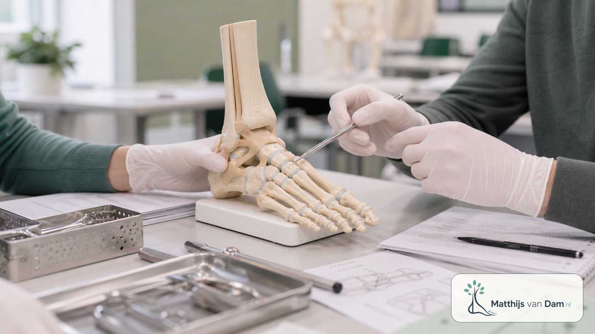

Onderwijs
AIOS-onderwijs voet en enkel in München
In München mocht ik meewerken aan hands-on onderwijs voor orthopedie-aios over voet- en enkelchirurgie. De cursus werd georganiseerd door Arthrex Nederland en vond plaats in een skills lab, met ruimte om technieken te oefenen en casuïstiek te bespreken.[1]
Korte terugblik
Bij deze cursus lag de nadruk op voet- en enkelchirurgie: anatomie, techniek en de afwegingen die bij een ingreep horen.
Voor mij was het vooral een mooie gelegenheid om met aios door praktische stappen en keuzes heen te lopen. Zulke bijeenkomsten zijn leerzaam voor deelnemers, maar ook voor mijzelf: je moet helder uitleggen wat je doet en waarom.